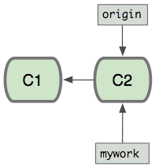
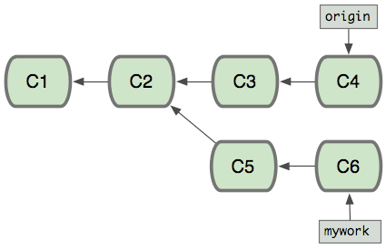
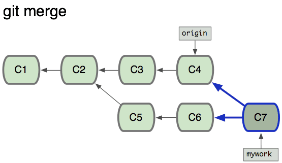
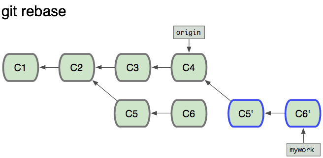
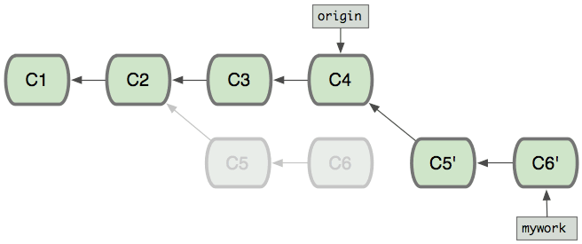
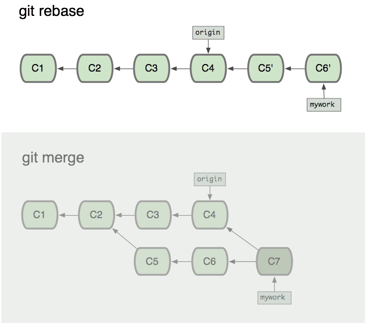

0.git rebase
git rebase命令在另一个分支基础之上重新应用，用于把一个分支的修改合并到当前分支。
使用语法
git rebase [-i | --interactive] [options] [--exec 《cmd》] [--onto 《newbase》]
[《upstream》 [《branch》]]
git rebase [-i | --interactive] [options] [--exec 《cmd》] [--onto 《newbase》]
--root [《branch》]
git rebase --continue | --skip | --abort | --quit | --edit-todo
示例
假设你现在基于远程分支”origin“，创建一个叫”mywork“的分支。
$ git checkout -b mywork origin
现在我们在这个分支(mywork)做一些修改，然后生成两个提交(commit).
$ vi file.txt
$ git commit
$ vi otherfile.txt
$ git commit
... ...
但是与此同时，有些人也在”origin“分支上做了一些修改并且做了提交了， 这就意味着”origin“和”mywork“这两个分支各自”前进”了，它们之间”分叉”了。
在这里，你可以用”pull“命令把”origin“分支上的修改拉下来并且和你的修改合并； 结果看起来就像一个新的”合并的提交”(merge commit):
但是，如果你想让”mywork“分支历史看起来像没有经过任何合并一样，也可以用 git rebase，如下所示:
$ git checkout mywork
$ git rebase origin
这些命令会把你的”mywork“分支里的每个提交(commit)取消掉，并且把它们临时 保存为补丁(patch)(这些补丁放到”.git/rebase“目录中), 然后把”mywork“分支更新 到最新的”origin“分支，最后把保存的这些补丁应用到”mywork“分支上。
当’mywork‘分支更新之后，它会指向这些新创建的提交(commit),而那些老的提交会被丢弃。 如果运行垃圾收集命令(pruning garbage collection), 这些被丢弃的提交就会删除.
1.用合并(merge)和用rebase所产生的历史的区别：
在rebase的过程中，也许会出现冲突(conflict)。在这种情况，Git会停止rebase并会让你去解决冲突； 在解决完冲突后，用”git add“命令去更新这些内容的索引(index), 然后，你无需执行 git commit,只要执行:
$ git rebase --continue
这样git会继续应用(apply)余下的补丁。
在任何时候，可以用--abort参数来终止rebase的操作，并且”mywork“ 分支会回到rebase开始前的状态。
$ git rebase --abort